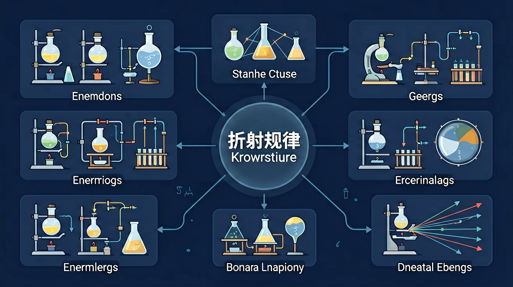
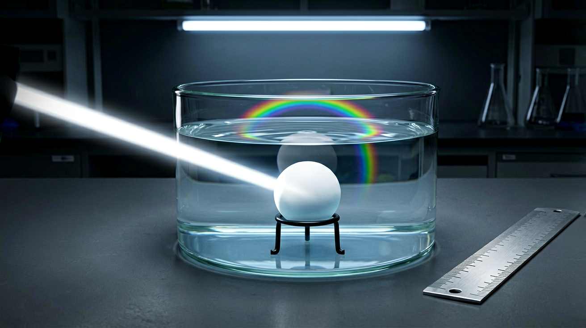
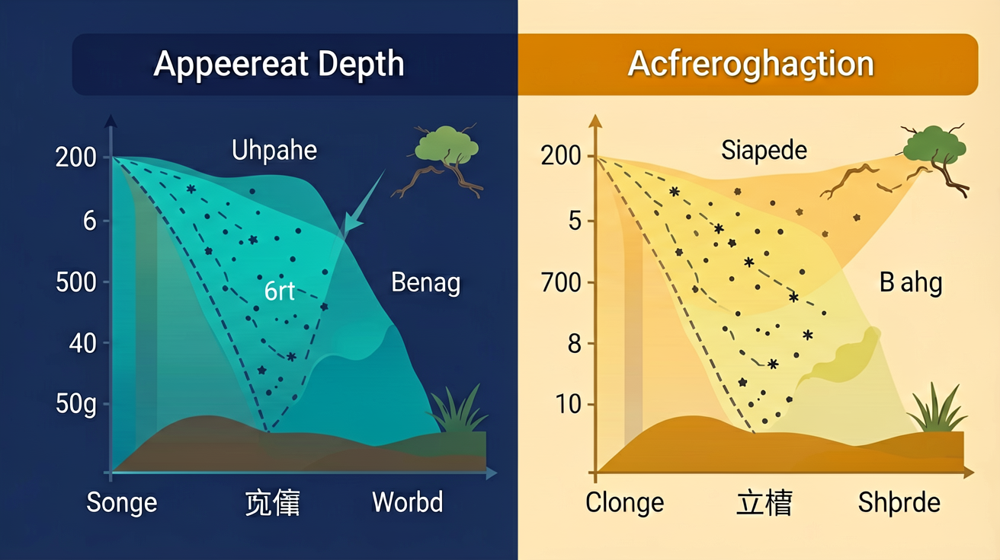

利用折射解释视深变浅、空气中看水中物体位置偏差等。
对光现象有生活经验。
记混反射/折射规律；虚实像不分。
建立折射规律应用模型并会判断。
关于折射规律应用，更合理的是
利用折射解释视深变浅、空气中看水中物体位置偏差等…
抓住角度/成像关键量
联系生活与实验


研究光现象时常用
光学实验应注意
折射规律应用的学习重点是
虚像的特点是
解释生活光现象应
用三句话说明折射规律应用最重要的一条规律，并举一例。
勾选你已掌握的条目。
❓ 为什么筷子插水里看起来弯了？
❓ 游泳池实际深度为什么比看起来深？
❓ 放大镜为什么能放大图像？
学完这一课，这些问题你都能自信地回答。
🎯 能说出折射规律的三条基本内容
🎯 能判断光从空气进入水中时的偏折方向
🎯 能分析简单折射现象中的入射角与折射角关系
✅ 强调折射角大小由介质折射率决定
💡 受反射现象干扰
✅ 用直角三角板演示法线画法
💡 几何作图不规范
口诀：空气入水近法线，水入空气远法线
类比：像汽车从公路开进泥地会突然减速转向
（中考题）某光线从空气以30°入射角射向水面，测得折射角22°，则该介质折射率约为？
潜水员在水下看岸上树木会显得？
（迁移题）沙漠中出现的海市蜃楼现象是由于？
And：学生知道光从空气斜射入水会偏折
But：但不知道偏折角度如何影响视觉判断
Therefore：通过定量分析建立折射与深度的关系
当光从水斜射入空气时，折射角大于入射角。例如：真实水深2米，人眼看到的光线以45°入射角射出水面时，折射角约70°，导致大脑误判深度为1.5米（计算示例：n水≈1.33，根据sinθ₁/sinθ₂=n₂/n₁）。
🌍 游泳池实际深度1.8米，但站在岸上看总觉得只有1.2米左右，这是折射导致的视觉误差。
光线从水中30°角射向空气，折射角约为？（n水=1.33）
And：学生见过筷子插水里变弯的现象
But：不理解弯折位置与视角的关系
Therefore：建立观察角度与虚像位置的定量联系
筷子在水面交界处看似弯折，是因为水下部分发出的光折射后反向延长线交于更高处。例如：筷子实际在水下20cm处，当人眼以60°视角观察时，虚像位置会上移约5cm（计算示例：根据折射定律和几何关系）。
🌍 喝奶茶时吸管在杯口处好像断成两截，调整观察角度会发现'断裂'位置变化。
哪个角度观察时筷子'弯折'最明显？
And：学生知道折射会改变物体位置
But：不知道如何修正瞄准点
Therefore：掌握实际位置与视觉位置的换算方法
水中鱼的实际位置比看到的更靠下。例如：看到鱼在视线30°方向1米处，实际位置约在33°方向1.2米处（计算示例：设n水=1.33，根据视深公式d'=d/n）。捕鱼时要向看到的鱼的下方叉去。
🌍 潜水员抓海胆时需要向下多够一段距离，渔民叉鱼也有类似技巧。
看到鱼在水下1米处（垂直看），实际距离约多少？
And：学生了解凸透镜成像规律
But：不会用折射率解释成像变化
Therefore：建立材料折射率与透镜焦距的关联
透镜焦距与材料折射率相关。例如：相同曲率的凸透镜，折射率1.5的玻璃焦距为10cm，换成折射率1.6的树脂后焦距变为8cm（计算示例：根据透镜制造公式1/f=(n-1)(1/R₁-1/R₂)）。
🌍 老花镜用树脂片比玻璃片更薄，就是因为高折射率材料可以缩短焦距。
哪种方法能增大凸透镜焦距？
点击节点跳转到对应章节；可切换布局。
先独立作答，再点选项查看对错与错因。
当光线从玻璃(n=1.5)斜射入空气时，若入射角为30°，则折射角最接近
下列哪个现象与光的折射无关？
保持入射角不变，当光从水进入某介质时折射角减小，说明该介质
光从空气斜射入水中时，折射角____入射角（选填＞/＜/＝），传播速度____（选填变大/变小/不变）
答案：＜；变小
水折射率大于空气导致折射角减小，光速v=c/n会减小
某光线在玻璃和空气界面发生全反射时，入射角必须____临界角，且光从____射向____（后两空填介质名称）
答案：≥；玻璃；空气
全反射条件：光密到光疏介质且入射角≥临界角
关于折射现象，下列说法正确的是
使用半圆形玻璃槽盛放不同液体，测量激光从玻璃射向液体时的临界角